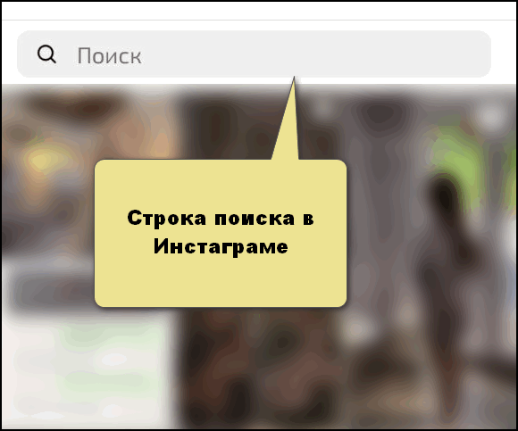
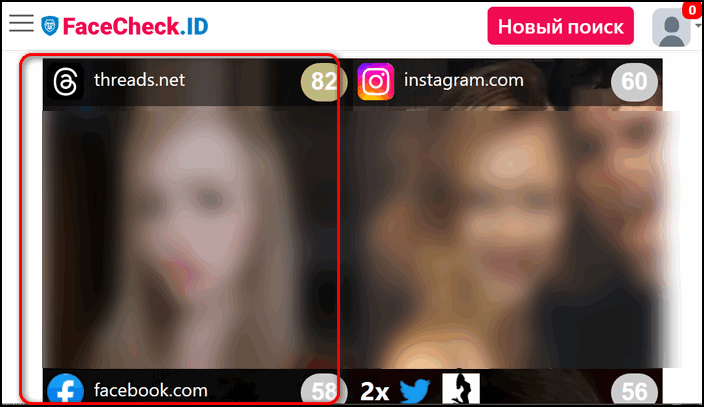
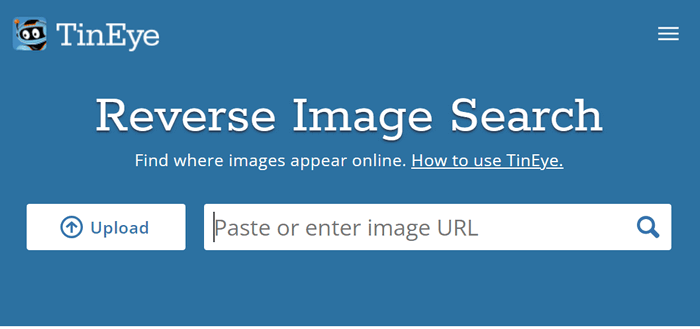
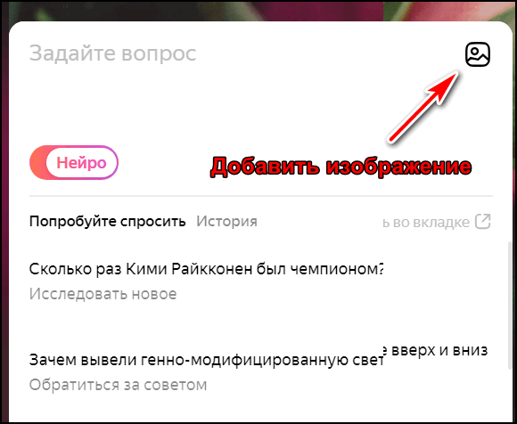

Как найти человека по фото в Инстаграм

Чтобы найти по фото в Инстаграм*, нужно воспользоваться любой поисковой системой с функцией «Поиск по картинке». Но чтобы отыскать, нужно взять снимок человека из любой другой социальной сети.
Как Инстаграм* поможет в поиске
В самой социальной сети нельзя искать по фотографии или картинке. У пользователей есть четыре варианта, как отыскать нужный профиль:
- Сама строка «Поиск».
- Геолокация и хештеги.
- Имя пользователя и другие персональные данные.
- По номеру телефона, указанному в телефонной книге.
По фотографии помогут искать дополнительные сервисы, куда можно загрузить снимок и в вариантах определения указать «Инстаграм*».

Поиск возможен в случае, если у пользователя открыт аккаунт и его можно отыскать с помощью поисковой системы. То есть, в параметрах страницы не запрещено отображать аккаунт на других сайтах, кроме Инстаграма*.Геолокация и адрес в Инстаграме* и как работает: подробнее в нашей статье
Какие фото лучше использовать
Чтобы поиск был эффективным, нужно использовать фотографии определенного типа:
- хорошо видно лицо;
- на снимке только один человек: тот, которого ищут;
- нормальное качество.
Конечно, если снимок всего один и низкого качества (низкий уровень света, нет контраста или размыта фигура) отыскать человека сложнее. С несколькими снимками искать проще потому что пользователь может пробовать разные варианты и хотя бы один из них будет подходящим.
FaceCheckID: тестируем сервис
Один из популярных сервисов для поиска людей в разных социальных сетях и активностей в интернете – FaceCheckId. В его функции входит поиск по базам социальных сетей, размещенных снимках на форумах, объявления. Прежде чем начать поиск, пользователь должен согласиться с условиями:
- страна, откуда выполнен поиск, не входит в состав Европейского союза;
- пользователь не будет шантажировать, преследовать искомого человека, а также не вступит в контакт с опасными лицами.
Загрузив снимок, можно получить до 20 результатов, большая часть из которых – похожие люди. Но первые два результата чаще верные и соответствуют страницам нужного человека. В рассмотренном нами примере, это Threads* и с этой социальной сети можно перейти на страницу в Инстаграме*. Как искать:
- Зайти в сервис – нажать по кнопке: «Искать по фото».
- Загрузить фотокарточку – подождать, когда будут собраны данные.
- Перейти к результатам.

Сверху указан процент совпадения. Максимальный: 90-100, то есть точно страница нужного человека. Далее – пользователи с похожими снимками или те, кто внешне схож. Для постоянного взаимодействия с сервисом нужно оплатить пакет услуг. Есть на один поиск, на месяц и на выбранное число проверок.
TinEye
Менее эффективен предыдущего, но аккаунты популярных блогеров и пользователей, которые часто делятся своими снимками – найдет. Это специальный сервис для поиска изображений, который похож на Google. Как искать с его помощью:
- Зайти на сайт – зарегистрироваться.
- Вставить в строку «Поиск» изображение с компьютера/телефона или отправить ссылку.

- Подождать, пока будут показаны результаты.
Так можно отыскать любые веб-страницы, где у нужного человека установлено фото или есть упоминание об этой публикации.
Ищем в поисковых системах
Найти Инстаграм* по фото человека поможет любая поисковая система. Например, с помощью Яндекса и поиску по картинкам можно отыскать даже старые упоминания о социальных сетях, сайтах. С помощью сервиса Яндекс.Картинки ищут популярные и менее известные изображения в социальных сетях, но только на открытых страницах:
- Зайти в Яндекс Картинки – загрузить нужное фото.
- Подождать, пока появится ответ.
Яндекс, как и Google, показывают площадки, где недавно были размещены искомые фото или находятся в качестве популярных заметок. Но среди этих результатов нередко попадаются ссылки на социальные сети, как Instagram*. В случае с поиском именно этой социальной сети, лучше использовать Google. Он покажет все старые и новые аккаунты нужного человека.
Через нейроЯндекс
В Яндекс браузере, при включении режима «Нейро», можно собрать информацию о пользователе загрузив фото. Воспользоваться для поиска аккаунта в Инстаграм*:
- Зайти в поиск с пометкой «Нейро» - сбоку появится функция: «Загрузить снимок».

- Добавить текст: «Найти Instagram*».
Далее появятся ответы по запросы и никнейм нужного человека. Если его аккаунт непопулярен или нигде не был упомянут – Яндекс не справится с поставленной задачей. Но можно вернуться к поиску с помощью картинок и тогда аккаунт точно найдется среди остальных. Лучше, если пользователь знает персональные данные искомого человека и может это указать как дополнительную информацию в поиск.
Почему не появляется страница в поиске
Найти в Инстаграм* по фото из ВК возможно, если у нужного человека не скрыт аккаунт, указаны одинаковые персональные данные во многих социальных сетях. Предположим, один и тот же никнейм в Инстаграме*, ВК и Тик Токе. Другие причины, почему может не появиться:
- неправильные персональные данные. Указаны с ошибкой или вовсе не соответствуют;
- фотографии были удалены со страницы пользователя;
- закрытая учетная запись - посмотреть её можно через специальный сервис.
Если способ с поиском по картинкам не увенчался успехом – нужно указывать персональные данные и искать таким образом. Или перейти в другие социальные сети и проверить: нет ли размещенной ссылки с призывом подписаться на блог.
Если ни один из вариантов не был успешен, возможно у этого человека просто нет страницы в Инстаграме*.